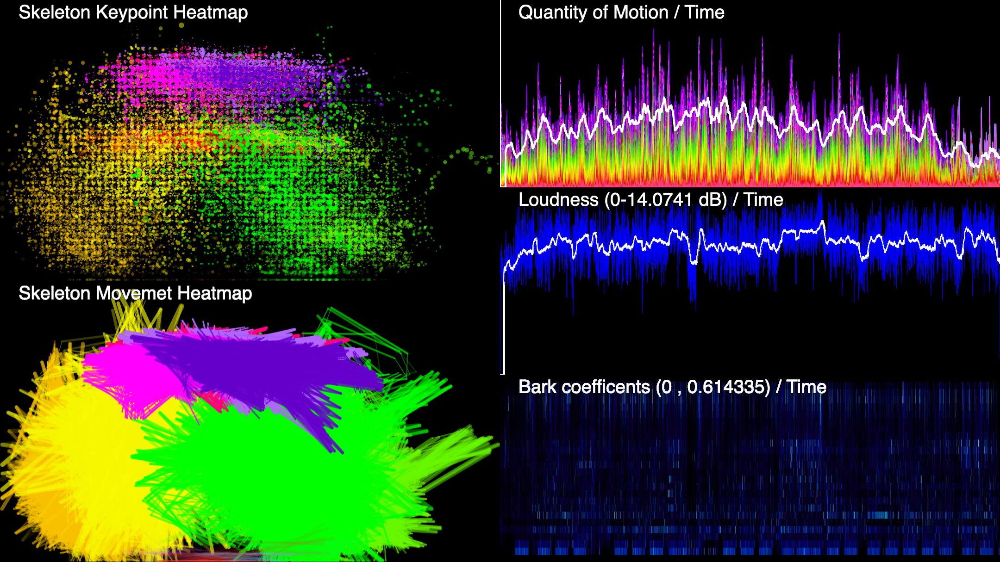

The design of interactions with sound and audio processes is a seminal activity in the creation of a performance, installation, a virtual sound environment, or interface for musical expression. The interaction design is often fixated by the interface without taking into account human factors and our diverse abilities to perceive the sound and interface affordances. The Human-Sound Interaction (HSI) project looks at how people move and interact with sound and interfaces to control sound, considering their diverse abilities to perceive sound.
With the term Human-Sound Interaction (HSI) we identify interactions between the human and sound (through an interface) that are direct, engaging, natural and embodied [1]:
In the first phase this project we explored HSI thorugh the prototyping of an interface nambed Soundsculpt based on this principle. This is fully describe in a Conference paper published at the 7th International Conference on Movement and Computing (MOCO ’20). Read the article at this link. The presentation of this paper can be viewed at the video below.
The design of such interactions is now being explored in a series of workshops, conducted in different venues. Please, see the list of workshop and events below.
Together with a series of workshps, we are now building the HSI-data repository. Data include motion and motion and sound features of music translated in sign language. This work is being conducted with the aim to model gesture-sound relationships of Sign Language translated music, then design HSIs considering the abilities to percieve sound of aurally diverse musicians and audience.

Example of audio and motion feature data visualisation.
Stay tuned! Please, get in touch if you are interested in collaborating. :)
Balandino Di Donato, Creative Computing Research Group (CCRG), University of Leicester
Christopher Dewey, Department of Computer Science, University of Huddersfield
Tychonas Michailidis, DMT Lab - Birmingham City University
Alessio Gabriele, CRM - Centro Ricerche Musicali of Rome
[1] Balandino Di Donato, Christopher Dewey, and Tychonas Michailidis. 2020. Human-Sound Interaction: Towards a Human-Centred Sonic Interaction Design approach. In 7th International Conference on Movement and Comput-ing (MOCO ’20), July 15–17, 2020, Jersey City/ Virtual, NJ, USA.ACM, NewYork, NY, USA, 4 pages. DOI: https://doi.org/10.1145/3401956.3404233
[2] P. Dourish.Where The Action Is: The Foundations of Embodied Interaction. MIT Press, Oct. 2001
[3] S. A. Grandhi, G. Joue, and I. Mittelberg. Understanding naturalness and intuitiveness ingesture production. In Proceedings of the SIGCHI Conference on Human Factors in Computing Systems, CHI, pages 821–824, Vancouver, BC, Canada, 2011.
[4] D. A. Norman and S. W. Draper. User Centered System Design: New Perspectives on Human-computer Interaction. Lawrence Erlbaum Associates, Hillsdale, New Jersey, 1986.